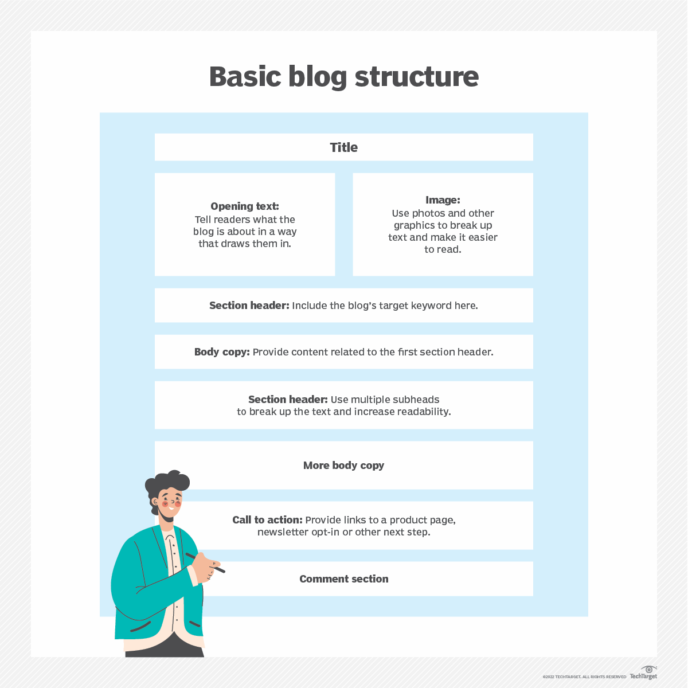

What is a blog post?

A blog post is the piece of content in a blog. Posts are frequently updated and often organized in
reverse chronological
order with the newest blog post appearing at the top.
Each post covers a subtopic of the blog and links back to the blog itself. For instance, blog site
Engadget focuses
primarily on technology news and reviews of consumer electronics. Each blog post covers a specific
piece of electronic
or technology news. But posts on the site also cover topics adjacent to electronics, such as movies
and other forms of
entertainment that overlap with the tech space. For example, one post looks at a movie dramatization
of the popular
video game chain GameStop.
Bloggers use their posts to attract audiences and rank high on search engine results. Business blog
posts are often used
at the beginning of the sales funnel that describes a product buyer's journey. They serve as an
audience's introduction
to a business and its products. Bloggers can use these posts to build content around more keywords
and topical trends
that audiences are searching for and turn those visitors into customers..
Basic blog Structure

Basic Blog Structure Are as folowing:
- Share views and connect with an audience
Blogs provide many writers and thought leaders with an outlet to share information and their
views with a wide audience. Instead of relying on publications to publish their content or
write about their business, individuals and businesses communicate directly with their
audience. Blogging is an effective way to raise awareness about a subject or product and to
build an online community around it.
- Build a business and sell products.
Blogging is a popular practice for businesses trying to gain credibility in their industries,
build high search engine rankings, connect with a target audience and identify sales leads.
Using search engine optimization (SEO) strategies, blog content can turn a business blog
into an authority on a technology or market. In this way, a business can reach a wide
audience that regularly visits or links to its website and buys its products.
Weekly Editor

Blogs were originally called weblogs, which were websites that consisted of a series of entries
arranged in reverse chronological order, so the newest posts appeared at the top. They were
frequently updated with new information about various topics.
Today's blogs are more likely to be a personal online journal or commentary related to a business
that's frequently updated and intended for general public consumption. Blogs are still often defined
by their format, consisting of a series of entries posted to a single page in reverse chronological
order. Many blogs are collaborative and include multiple authors often writing on a single theme
such as Engadget, a tech blog with multiple authors.